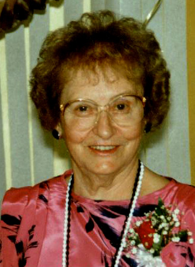

GERMAINE HENRInotre ancêtre de la 7ième générationfiche familiale

|
Germaine HenriNaissance le 29 octobre 1913 à Ste-Rose de Watford.
Baptême à Ste-Rose de Watford. Née un mercredi. Baptisée Marie-Anne, Germaine. Arrivée à Macamic en 1919, elle y fit toute ses études. En 1935 elle quitta Macamic pour venir à Duparquet, elle y travaille à titre de "Waitresse" à la salle à manger de l'Hôtel Goldfielf où elle rencontre
Tony. Elle fut très active chez les Dames
Fermières et dans toutes les activités paroissiales ainsi que membre de
différentes chorales. Excellente tisserande, elle transmit généreusement ses connaissances. Amateur de ski, quilles, curling et de voyages dont plusieurs se firent avec la compagnie de sa bonne amie Antoinette Massicotte. Marraine de: Raymonde Champagne, Réal Beaudoin, Guy Lussier et Éric Beaudoin. Père: Eugène HenriMère: Graziella Provost |
Mariage le 14 mai 1936 à St-Albert le Grand de Duparquet.
Âge de l'époux 23 ans, âge de l'épouse 22 ans.
Enfant 1
Lisèle Beaudoin décède à l'âge de 70 ans.
Mariage le 10 août 1963 à St-Joseph de Rouyn.
Conjoint: Danny Webb
-------------------------------------------------------------------------------
Enfant 2
Yvon BeaudoinMariage le 20 octobre 1962 à Immaculée-Conception de Rouyn.
Conjointe: Fleurette Rivest
-------------------------------------------------------------------------------
Enfant 3
André BeaudoinMariage le 29 juillet 1967 à Sacré-Coeur de Noranda.
Conjointe: Pauline GaudreaultUnion le 1 novembre 1992 à Rouyn-Noranda.
Conjointe: Marielle Simard
-------------------------------------------------------------------------------
Enfant 4
Joël BeaudoinMariage le 3 juin 1967 à St-Michel de Rouyn.
Conjointe: Pierrette Robichaud
-------------------------------------------------------------------------------
Enfant 5
Francine BeaudoinMariage le 17 août 1968 à St-Joseph de Rouyn.
Conjoint: Jean-Guy PoirierMariage le 16 juillet 1983 à Noranda.
Conjoint: Marcel Bélanger
-------------------------------------------------------------------------------
Enfant 6
Jean-Pierre Beaudoin
-------------------------------------------------------------------------------
Enfant 7
Michèle BeaudoinUnion en mai 1983 à Montréal.
Conjoint: Yves Noël décède à l'âge de 53 ans.
-------------------------------------------------------------------------------